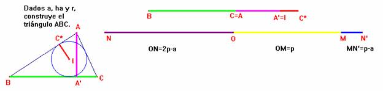
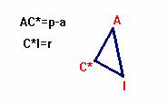
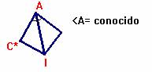
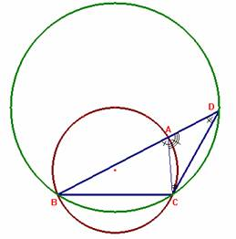
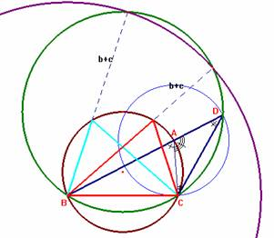
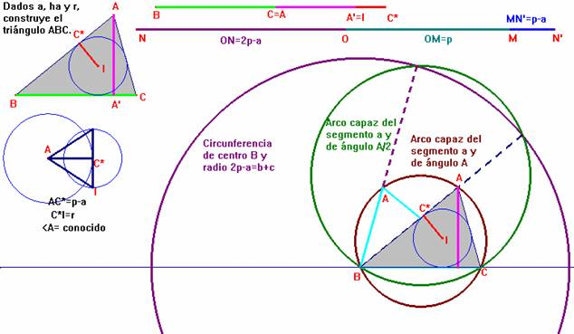

Problema 100.-
Dado un lado l, la altura correspondiente h y el radio de la circunferencia inscrita, r, construir el triángulo.
Rey Pastor, J. (1905): Revista Trimestral de Matemáticas. Zaragoza. (Tomo V. p. 239)
(El editor agradece a Natividad Gómez Pérez, Directora de la Biblioteca de Matemáticas de la Universidad de Sevilla la obtención del documento que se encuentra en la Universitat Politecnica de Catalunya.)
Sol: Florentino Damián Aranda Ballesteros IES Blas Infante Córdoba (16 de junio de 2003)
Usaremos la siguiente notación más cómoda para nuestro empeño:
Dados a= lado a, ha= altura correspondiente al lado a, y r = radio de la circunferencia inscrita, se pide que construyamos el triángulo ABC.

Sea S(ABC) el área del triángulo ABC. Entonces como S(ABC)= 1/2×a×ha = p×r; donde p=1/2×(a+b+c) tenemos que p=(a×ha)/(2×r)
y, así podemos obtener y construir fácilmente los segmentos de longitudes p, 2×p-a = b+c y p-a.
Con los segmentos p-a y r como catetos, construimos el triángulo rectángulo AC*I como sigue:

y así, junto a su imagen simétrica respecto de AI, obtenemos el valor del ángulo <A.

De modo que, ahora el problema pasa a ser la construcción del triángulo ABC, conocidos el lado a, el ángulo <A, y la suma b+c = 2p-a
Veamos seguidamente cómo construir este caso.
Llevando AD = AC resulta BD = b+c, siendo el triángulo ACD isósceles y <BDC = <A/2 al ser <A adyacente al ángulo <CAD. Por fin, el triángulo BCD puede construirse fácilmente.
|  |
 |
En general, la situación sería la siguiente:
